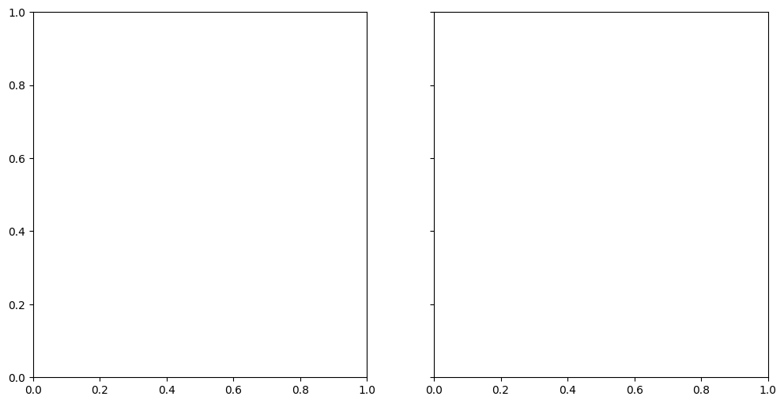

Merge, analyse and visualize OGGM GCM runs#
In this notebook we want to show:
How to merge the output of different OGGM GCM projections into one dataset
How to calculate regional values (e.g. volume) using the merged dataset
How to use matplotlib or seaborn to visualize the projections and plot different statistical estimates (median, interquartile range, mean, std, …)
How to use HoloViews and Panel to visualize the outcome. This part uses advanced plotting capabilities which are not necessary to understand the rest of the notebook.
This notebook is intended to explain the postprocessing steps, rather than the OGGM workflow itself. Therefore, some code (especially conducting the GCM projection runs) does not have many explanations. If you are more interested in these steps you should check out the notebook Run OGGM with GCM data.
GCM projection runs#
The first step is to conduct the GCM projection runs. We choose two different glaciers by their rgi_ids and conduct the GCM projections. Again if you do not understand all the following code you should check out the Run OGGM with GCM data notebook.
# Libs
from time import gmtime, strftime
import xarray as xr
import numpy as np
# Locals
from oggm import utils, workflow, tasks, DEFAULT_BASE_URL
import oggm.cfg as cfg
from oggm.shop import gcm_climate
Pre-processed directories#
# Initialize OGGM and set up the default run parameters
cfg.initialize(logging_level='WARNING')
# change border around the individual glaciers
cfg.PARAMS['border'] = 80
# Use Multiprocessing
cfg.PARAMS['use_multiprocessing'] = True
# For hydro output
cfg.PARAMS['store_model_geometry'] = True
# Local working directory (where OGGM will write its output)
cfg.PATHS['working_dir'] = utils.gettempdir('OGGM_merge_gcm_runs', reset=True)
# RGI glaciers: Ngojumba and Khumbu
rgi_ids = utils.get_rgi_glacier_entities(['RGI60-15.03473', 'RGI60-15.03733'])
# Go - get the pre-processed glacier directories
# in OGGM v1.6 you have to explicitly indicate the url from where you want to start from
# we will use here the elevation band flowlines which are much simpler than the centerlines
gdirs = workflow.init_glacier_directories(rgi_ids, from_prepro_level=5, prepro_base_url=DEFAULT_BASE_URL)
2026-03-02 11:01:53: oggm.cfg: Reading default parameters from the OGGM `params.cfg` configuration file.
2026-03-02 11:01:53: oggm.cfg: Multiprocessing switched OFF according to the parameter file.
2026-03-02 11:01:53: oggm.cfg: Multiprocessing: using all available processors (N=4)
2026-03-02 11:01:53: oggm.cfg: Multiprocessing switched ON after user settings.
2026-03-02 11:01:53: oggm.cfg: PARAMS['store_model_geometry'] changed from `False` to `True`.
---------------------------------------------------------------------------
RuntimeError Traceback (most recent call last)
Cell In[2], line 17
14 cfg.PATHS['working_dir'] = utils.gettempdir('OGGM_merge_gcm_runs', reset=True)
16 # RGI glaciers: Ngojumba and Khumbu
---> 17 rgi_ids = utils.get_rgi_glacier_entities(['RGI60-15.03473', 'RGI60-15.03733'])
19 # Go - get the pre-processed glacier directories
20 # in OGGM v1.6 you have to explicitly indicate the url from where you want to start from
21 # we will use here the elevation band flowlines which are much simpler than the centerlines
22 gdirs = workflow.init_glacier_directories(rgi_ids, from_prepro_level=5, prepro_base_url=DEFAULT_BASE_URL)
File /usr/local/pyenv/versions/3.13.12/lib/python3.13/site-packages/oggm/utils/_downloads.py:1925, in get_rgi_glacier_entities(rgi_ids, version)
1923 selection = []
1924 for reg in sorted(np.unique(regions)):
-> 1925 sh = gpd.read_file(get_rgi_region_file(reg, version=version))
1926 try:
1927 selection.append(sh.loc[sh.RGIId.isin(rgi_ids)])
File /usr/local/pyenv/versions/3.13.12/lib/python3.13/site-packages/oggm/utils/_downloads.py:1882, in get_rgi_region_file(region, version, reset)
1862 def get_rgi_region_file(region, version=None, reset=False):
1863 """Path to the RGI region file.
1864
1865 If the RGI files are not present, download them.
(...) 1879 path to the RGI shapefile
1880 """
-> 1882 rgi_dir = get_rgi_dir(version=version, reset=reset)
1883 if version in ['70G', '70C']:
1884 f = list(glob.glob(rgi_dir + f"/*/*-{region}_*.shp"))
File /usr/local/pyenv/versions/3.13.12/lib/python3.13/site-packages/oggm/utils/_downloads.py:1791, in get_rgi_dir(version, reset)
1772 """Path to the RGI directory.
1773
1774 If the RGI files are not present, download them.
(...) 1787 path to the RGI directory
1788 """
1790 with get_lock():
-> 1791 return _get_rgi_dir_unlocked(version=version, reset=reset)
File /usr/local/pyenv/versions/3.13.12/lib/python3.13/site-packages/oggm/utils/_downloads.py:1839, in _get_rgi_dir_unlocked(version, reset)
1837 ofile = file_downloader(dfile, reset=reset)
1838 if ofile is None:
-> 1839 raise RuntimeError(f'Could not download RGI file: {dfile}')
1840 # Extract root
1841 try:
RuntimeError: Could not download RGI file: http://www.glims.org/RGI/rgi60_files/00_rgi60.zip
Download and process GCM data#
In this notebook, we will use the primary bias-corrected ISIMIP3b GCM files. You can also use directly CMIP5 or CMIP6 (how to do that is explained in run_with_gcm).
all_GCM = ['gfdl-esm4_r1i1p1f1', 'ipsl-cm6a-lr_r1i1p1f1',
'mpi-esm1-2-hr_r1i1p1f1',
'mri-esm2-0_r1i1p1f1', 'ukesm1-0-ll_r1i1p1f2']
# define the SSP scenarios
all_scenario = ['ssp126', 'ssp370', 'ssp585']
for GCM in all_GCM:
for ssp in all_scenario:
# we will pretend that 'mpi-esm1-2-hr_r1i1p1f1' is missing for `ssp370`
# to later show how to deal with missing values,
# if you want to use this
# code you can of course remove the "if" and just download all GCMs and SSPs
if (ssp == 'ssp370') & (GCM=='mpi-esm1-2-hr_r1i1p1f1'):
pass
else:
# Download and process them:
workflow.execute_entity_task(gcm_climate.process_monthly_isimip_data, gdirs,
ssp = ssp,
# gcm ensemble -> you can choose another one
member=GCM,
# recognize the climate file for later
output_filesuffix=f'_{GCM}_{ssp}'
);
# you could create a similar workflow with CMIP5 or CMIP6
---------------------------------------------------------------------------
NameError Traceback (most recent call last)
Cell In[3], line 18
15 pass
16 else:
17 # Download and process them:
---> 18 workflow.execute_entity_task(gcm_climate.process_monthly_isimip_data, gdirs,
19 ssp = ssp,
20 # gcm ensemble -> you can choose another one
21 member=GCM,
22 # recognize the climate file for later
23 output_filesuffix=f'_{GCM}_{ssp}'
24 );
26 # you could create a similar workflow with CMIP5 or CMIP6
NameError: name 'gdirs' is not defined
Here we defined, downloaded and processed all the GCM models and scenarios (here 5 GCMs and three SSPs). We pretend that one GCM is missing for one scenario (this is sometimes the case in for example CMIP5 GCMs, see e.g. this table). We deal with possible missing GCMs for specific SCENARIOs by including a try/except in the code below and by taking care that the missing values are filled with NaN values (and stay NaN when doing sums).
Actual projection Runs#
Now we conduct the actual projection runs. Again handling the case that for a certain (GCM, SCENARIO) combination no data is available with a try/except.
for GCM in all_GCM:
for scen in all_scenario:
rid = '_{}_{}'.format(GCM, scen)
try: # check if (GCM, scen) combination exists
workflow.execute_entity_task(tasks.run_with_hydro, gdirs,
run_task=tasks.run_from_climate_data,
ys=2020, # star year of our projection runs
climate_filename='gcm_data', # use gcm_data, not climate_historical
climate_input_filesuffix=rid, # use the chosen GCM and scenario
init_model_filesuffix='_spinup_historical', # this is important! Start from 2020 glacier
output_filesuffix=rid, # the filesuffix of the resulting file, so we can find it later
store_monthly_hydro=True
);
except FileNotFoundError:
# if a certain scenario is not available for a GCM we land here,
# and we indicate this by printing a message so the user knows
# this scenario is missing.
# In this case of course, the file actually is available, but we just pretend that it is not ...
print('No ' + GCM +' run with scenario ' + scen + ' available!')
---------------------------------------------------------------------------
NameError Traceback (most recent call last)
Cell In[4], line 5
3 rid = '_{}_{}'.format(GCM, scen)
4 try: # check if (GCM, scen) combination exists
----> 5 workflow.execute_entity_task(tasks.run_with_hydro, gdirs,
6 run_task=tasks.run_from_climate_data,
7 ys=2020, # star year of our projection runs
8 climate_filename='gcm_data', # use gcm_data, not climate_historical
9 climate_input_filesuffix=rid, # use the chosen GCM and scenario
10 init_model_filesuffix='_spinup_historical', # this is important! Start from 2020 glacier
11 output_filesuffix=rid, # the filesuffix of the resulting file, so we can find it later
12 store_monthly_hydro=True
13 );
15 except FileNotFoundError:
16 # if a certain scenario is not available for a GCM we land here,
17 # and we indicate this by printing a message so the user knows
18 # this scenario is missing.
19 # In this case of course, the file actually is available, but we just pretend that it is not ...
20 print('No ' + GCM +' run with scenario ' + scen + ' available!')
NameError: name 'gdirs' is not defined
Merge datasets together#
Now that we have conducted the projection Runs we can start merging all outputs into one dataset. The individual files can be opened by providing the output_filesuffix of the projection runs as the input_filesuffix. Let us have a look at one resulting dataset!
file_id = '_{}_{}'.format(all_GCM[0], all_scenario[0])
ds = utils.compile_run_output(gdirs, input_filesuffix=file_id)
ds
---------------------------------------------------------------------------
NameError Traceback (most recent call last)
Cell In[5], line 2
1 file_id = '_{}_{}'.format(all_GCM[0], all_scenario[0])
----> 2 ds = utils.compile_run_output(gdirs, input_filesuffix=file_id)
3 ds
NameError: name 'gdirs' is not defined
We see that as a result, we get a xarray.Dataset. We also see that this dataset has three dimensions time, rgi_id and month_2d. When we look at the Data variables (click to expand) we can see that for each of these variables a certain combination of the dimensions is given. For example, for the volume we see the dimensions (time, rgi_id) which indicates that the underlying data is separated by each year and each glacier. Let’s have a look at the volume in 2030 and 2040 at the glacier ‘RGI60-15.03473’ (Ngojumba):
ds['volume'].loc[{'time': [2030, 2040], 'rgi_id': ['RGI60-15.03473' ]}]
---------------------------------------------------------------------------
NameError Traceback (most recent call last)
Cell In[6], line 1
----> 1 ds['volume'].loc[{'time': [2030, 2040], 'rgi_id': ['RGI60-15.03473' ]}]
NameError: name 'ds' is not defined
A more complete overview of how to access the data of xarray Dataset can be found here.
This is quite useful, but unfortunately, we have one xarray Dataset for each (GCM, SCENARIO) pair. For an easier calculation and comparison between different GCMs and Scenarios(here SSPs), it would be desirable to combine all individual Datasets into one Dataset with the additional dimensions (GCM, SCENARIO). Fortunately, xarray provides different functions to merge Datasets (here you can find an Overview).
In our case, we want to merge all individual datasets with two additional coordinates GCM and SCENARIO. Additional coordinates can be added with the comment .coords[], also you can include a description with .coords[].attrs['description']. For example, let us add GCM as a new coordinate:
ds.coords['GCM'] = all_GCM[0]
ds.coords['GCM'].attrs['description'] = 'Global Circulation Model'
ds
---------------------------------------------------------------------------
NameError Traceback (most recent call last)
Cell In[7], line 1
----> 1 ds.coords['GCM'] = all_GCM[0]
2 ds.coords['GCM'].attrs['description'] = 'Global Circulation Model'
3 ds
NameError: name 'ds' is not defined
You can see that now GCM is added as Coordinate, but when you look at the Data variables you see that this new Coordinate is not used by any of them. So we must add this new Coordinate to the Data variables using the .expand_dims() comment:
ds = ds.expand_dims('GCM')
ds
---------------------------------------------------------------------------
NameError Traceback (most recent call last)
Cell In[8], line 1
----> 1 ds = ds.expand_dims('GCM')
2 ds
NameError: name 'ds' is not defined
Now we see that GCM was added to the Dimensions and all Data variables now use this new coordinate. The same can be done with SCENARIO. As a standalone, this is not very useful. But if we add these coordinates to all datasets, it becomes quite handy for merging. Therefore, we now open all datasets and add to each one the two coordinates GCM and SCENARIO:
Add new coordinates#
ds_all = [] # in this array all datasets going to be stored with additional coordinates GCM and SCENARIO
creation_date = strftime("%Y-%m-%d %H:%M:%S", gmtime()) # here add the current time for info
for GCM in all_GCM: # loop through all GCMs
for scen in all_scenario: # loop through all SSPs
try: # check if GCM, SCENARIO combination exists
rid = '_{}_{}'.format(GCM, scen) # put together the same filesuffix which was used during the projection runs
ds_tmp = utils.compile_run_output(gdirs, input_filesuffix=rid) # open one model run
ds_tmp.coords['GCM'] = GCM # add GCM as a coordinate
ds_tmp.coords['GCM'].attrs['description'] = 'used Global circulation Model' # add a description for GCM
ds_tmp = ds_tmp.expand_dims("GCM") # add GCM as a dimension to all Data variables
ds_tmp.coords['SCENARIO'] = scen # add scenario (here ssp) as a coordinate
ds_tmp.coords['SCENARIO'].attrs['description'] = 'used scenario (here SSPs)'
ds_tmp = ds_tmp.expand_dims("SCENARIO") # add SSO as a dimension to all Data variables
ds_tmp.attrs['creation_date'] = creation_date # also add today's date for info
ds_all.append(ds_tmp) # add the dataset with extra coordinates to our final ds_all array
except RuntimeError as err: # here we land if an error occurred
if str(err) == 'Found no valid glaciers!': # This is the error message if the GCM, SCENARIO (here ssp) combination does not exist
print(f'No data for GCM {GCM} with SCENARIO {scen} found!') # print a descriptive message
else:
raise RuntimeError(err) # if another error occurred we just raise it
---------------------------------------------------------------------------
NameError Traceback (most recent call last)
Cell In[9], line 8
5 try: # check if GCM, SCENARIO combination exists
6 rid = '_{}_{}'.format(GCM, scen) # put together the same filesuffix which was used during the projection runs
----> 8 ds_tmp = utils.compile_run_output(gdirs, input_filesuffix=rid) # open one model run
10 ds_tmp.coords['GCM'] = GCM # add GCM as a coordinate
11 ds_tmp.coords['GCM'].attrs['description'] = 'used Global circulation Model' # add a description for GCM
NameError: name 'gdirs' is not defined
Actual merging#
ds_all now contains all outputs with the additionally added coordinates. Now we can merge them with the very convenient xarray function xr.combine_by_coords():
ds_merged = xr.combine_by_coords(ds_all, fill_value=np.nan) # define how the missing GCM, SCENARIO combinations should be filled
Great! You see that the result is one Dataset, but we still can identify the individual runs with the two additionally added Coordinates GCM and SCENARIO (SSP). If you want to save this new Dataset for later analysis you can use for example .to_netcdf() (here you can find an Overview of xarray writing options):
ds_merged.to_netcdf('merged_GCM_projections.nc')
And to open it again later and automatically close the file after reading you can use:
with xr.open_dataset('merged_GCM_projections.nc') as ds:
ds_merged = ds
Calculate regional values#
Now we have our merged dataset and we can start with the analysis. To do this xarray gives us a ton of different mathematical functions which can be used directly with our dataset. Here you can find a great overview of what is possible.
As an example, we could calculate the mean and std of the total regional glacier volume for different scenarios of our merged dataset. Here our added coordinates come in very handy. However, for a small amount of GCMs (for ISIMIP3b e.g. 5 GCMs), it is often better to compute instead more robust estimates, such as the median, the 25th and 75th percentile or the total range. We will show different options later:
Let us start by calculating the total “regional” glacier volume using .sum() (of course, here it is just the sum over two glaciers…):
# the missing values were filled with np.NaN values for all time points and glaciers
assert np.all(np.isnan(ds_merged['volume'].sel(SCENARIO='ssp370').sel(GCM='mpi-esm1-2-hr_r1i1p1f1')))
---------------------------------------------------------------------------
KeyError Traceback (most recent call last)
/usr/local/pyenv/versions/3.13.12/lib/python3.13/site-packages/xarray/core/dataset.py in ?(self, name)
1231 variable = self._variables[name]
1232 except KeyError:
-> 1233 _, name, variable = _get_virtual_variable(self._variables, name, self.sizes)
1234
KeyError: 'volume'
During handling of the above exception, another exception occurred:
KeyError Traceback (most recent call last)
File /usr/local/pyenv/versions/3.13.12/lib/python3.13/site-packages/xarray/core/dataset.py:1338, in Dataset.__getitem__(self, key)
1337 try:
-> 1338 return self._construct_dataarray(key)
1339 except KeyError as e:
File /usr/local/pyenv/versions/3.13.12/lib/python3.13/site-packages/xarray/core/dataset.py:1233, in Dataset._construct_dataarray(self, name)
1232 except KeyError:
-> 1233 _, name, variable = _get_virtual_variable(self._variables, name, self.sizes)
1235 needed_dims = set(variable.dims)
File /usr/local/pyenv/versions/3.13.12/lib/python3.13/site-packages/xarray/core/dataset_utils.py:79, in _get_virtual_variable(variables, key, dim_sizes)
78 if len(split_key) != 2:
---> 79 raise KeyError(key)
81 ref_name, var_name = split_key
KeyError: 'volume'
The above exception was the direct cause of the following exception:
KeyError Traceback (most recent call last)
/tmp/ipykernel_10095/3416520980.py in ?()
1 # the missing values were filled with np.NaN values for all time points and glaciers
----> 2 assert np.all(np.isnan(ds_merged['volume'].sel(SCENARIO='ssp370').sel(GCM='mpi-esm1-2-hr_r1i1p1f1')))
/usr/local/pyenv/versions/3.13.12/lib/python3.13/site-packages/xarray/core/dataset.py in ?(self, key)
1347
1348 # If someone attempts `ds['foo' , 'bar']` instead of `ds[['foo', 'bar']]`
1349 if isinstance(key, tuple):
1350 message += f"\nHint: use a list to select multiple variables, for example `ds[{list(key)}]`"
-> 1351 raise KeyError(message) from e
1352
1353 if utils.iterable_of_hashable(key):
1354 return self._copy_listed(key)
KeyError: "No variable named 'volume'. Variables on the dataset include []"
# So, what happens to the missing GCM and ssp if we just do the sum?
ds_total_volume_wrong = ds_merged['volume'].sum(dim='rgi_id', # over which dimension the sum should be taken, here we want to sum up over all glacier ids
keep_attrs=True) # keep the variable descriptions
ds_total_volume_wrong.sel(SCENARIO='ssp370').sel(GCM='mpi-esm1-2-hr_r1i1p1f1')
---------------------------------------------------------------------------
KeyError Traceback (most recent call last)
/usr/local/pyenv/versions/3.13.12/lib/python3.13/site-packages/xarray/core/dataset.py in ?(self, name)
1231 variable = self._variables[name]
1232 except KeyError:
-> 1233 _, name, variable = _get_virtual_variable(self._variables, name, self.sizes)
1234
KeyError: 'volume'
During handling of the above exception, another exception occurred:
KeyError Traceback (most recent call last)
File /usr/local/pyenv/versions/3.13.12/lib/python3.13/site-packages/xarray/core/dataset.py:1338, in Dataset.__getitem__(self, key)
1337 try:
-> 1338 return self._construct_dataarray(key)
1339 except KeyError as e:
File /usr/local/pyenv/versions/3.13.12/lib/python3.13/site-packages/xarray/core/dataset.py:1233, in Dataset._construct_dataarray(self, name)
1232 except KeyError:
-> 1233 _, name, variable = _get_virtual_variable(self._variables, name, self.sizes)
1235 needed_dims = set(variable.dims)
File /usr/local/pyenv/versions/3.13.12/lib/python3.13/site-packages/xarray/core/dataset_utils.py:79, in _get_virtual_variable(variables, key, dim_sizes)
78 if len(split_key) != 2:
---> 79 raise KeyError(key)
81 ref_name, var_name = split_key
KeyError: 'volume'
The above exception was the direct cause of the following exception:
KeyError Traceback (most recent call last)
/tmp/ipykernel_10095/4247351376.py in ?()
1 # So, what happens to the missing GCM and ssp if we just do the sum?
----> 2 ds_total_volume_wrong = ds_merged['volume'].sum(dim='rgi_id', # over which dimension the sum should be taken, here we want to sum up over all glacier ids
3 keep_attrs=True) # keep the variable descriptions
4 ds_total_volume_wrong.sel(SCENARIO='ssp370').sel(GCM='mpi-esm1-2-hr_r1i1p1f1')
/usr/local/pyenv/versions/3.13.12/lib/python3.13/site-packages/xarray/core/dataset.py in ?(self, key)
1347
1348 # If someone attempts `ds['foo' , 'bar']` instead of `ds[['foo', 'bar']]`
1349 if isinstance(key, tuple):
1350 message += f"\nHint: use a list to select multiple variables, for example `ds[{list(key)}]`"
-> 1351 raise KeyError(message) from e
1352
1353 if utils.iterable_of_hashable(key):
1354 return self._copy_listed(key)
KeyError: "No variable named 'volume'. Variables on the dataset include []"
At least in my xarray version, this creates a volume of “0”. That is not desirable, the sum over NaN, should give a NaN.
To be sure that this happens, you should add the keyword arguments skipna=True and min_count=amount_of_rgi_ids:
ds_total_volume = ds_merged['volume'].sum(dim='rgi_id', # over which dimension the sum should be taken, here we want to sum up over all glacier ids
skipna=True, # ignore nan values
# important, we need values for every glacier (here 2) to do the sum
# if some have NaN, the sum should also be NaN (if you don't set min_count, the sum will be 0, which is bad)
min_count=len(ds_merged.rgi_id),
keep_attrs=True) # keep the variable descriptions
# perfect, now, the `NaN` is preserved!
assert np.all(np.isnan(ds_total_volume.sel(SCENARIO='ssp370').sel(GCM='mpi-esm1-2-hr_r1i1p1f1')))
---------------------------------------------------------------------------
KeyError Traceback (most recent call last)
/usr/local/pyenv/versions/3.13.12/lib/python3.13/site-packages/xarray/core/dataset.py in ?(self, name)
1231 variable = self._variables[name]
1232 except KeyError:
-> 1233 _, name, variable = _get_virtual_variable(self._variables, name, self.sizes)
1234
KeyError: 'volume'
During handling of the above exception, another exception occurred:
KeyError Traceback (most recent call last)
File /usr/local/pyenv/versions/3.13.12/lib/python3.13/site-packages/xarray/core/dataset.py:1338, in Dataset.__getitem__(self, key)
1337 try:
-> 1338 return self._construct_dataarray(key)
1339 except KeyError as e:
File /usr/local/pyenv/versions/3.13.12/lib/python3.13/site-packages/xarray/core/dataset.py:1233, in Dataset._construct_dataarray(self, name)
1232 except KeyError:
-> 1233 _, name, variable = _get_virtual_variable(self._variables, name, self.sizes)
1235 needed_dims = set(variable.dims)
File /usr/local/pyenv/versions/3.13.12/lib/python3.13/site-packages/xarray/core/dataset_utils.py:79, in _get_virtual_variable(variables, key, dim_sizes)
78 if len(split_key) != 2:
---> 79 raise KeyError(key)
81 ref_name, var_name = split_key
KeyError: 'volume'
The above exception was the direct cause of the following exception:
KeyError Traceback (most recent call last)
/tmp/ipykernel_10095/2513707858.py in ?()
----> 1 ds_total_volume = ds_merged['volume'].sum(dim='rgi_id', # over which dimension the sum should be taken, here we want to sum up over all glacier ids
2 skipna=True, # ignore nan values
3 # important, we need values for every glacier (here 2) to do the sum
4 # if some have NaN, the sum should also be NaN (if you don't set min_count, the sum will be 0, which is bad)
/usr/local/pyenv/versions/3.13.12/lib/python3.13/site-packages/xarray/core/dataset.py in ?(self, key)
1347
1348 # If someone attempts `ds['foo' , 'bar']` instead of `ds[['foo', 'bar']]`
1349 if isinstance(key, tuple):
1350 message += f"\nHint: use a list to select multiple variables, for example `ds[{list(key)}]`"
-> 1351 raise KeyError(message) from e
1352
1353 if utils.iterable_of_hashable(key):
1354 return self._copy_listed(key)
KeyError: "No variable named 'volume'. Variables on the dataset include []"
To conclude, for this calculation:
we told xarray over which dimension we want to sum up
dim='rgi_id'(all glaciers),that missing values should be ignored
skipna=True(as some GCM/SCENARIO combinations are not available),defined the minimum amount of required observations to do the operation (i.e. here we need at least two observations that are not
NaN),and that the attributes (the description of the variables) should be preserved
keep_attrs=True. You can see that the result has three dimensions left(GCM, time, SCENARIO)and the dimensionrgi_iddisappeared as we have summed all values up along this dimension.
Likewise, we can now calculate for example the median of all GCM runs:
ds_total_volume_median = ds_total_volume.median(dim='GCM', # over which dimension the median should be calculated
skipna=True, # ignore nan values
keep_attrs=True) # keep all variable descriptions
ds_total_volume_median
---------------------------------------------------------------------------
NameError Traceback (most recent call last)
Cell In[14], line 1
----> 1 ds_total_volume_median = ds_total_volume.median(dim='GCM', # over which dimension the median should be calculated
2 skipna=True, # ignore nan values
3 keep_attrs=True) # keep all variable descriptions
4 ds_total_volume_median
NameError: name 'ds_total_volume' is not defined
And you see that now we are left with two dimensions (SCENARIO, time). This means we have calculated the median total volume for all different scenarios (here SSPs) and along the projection period. The mean, standard deviation (std) or percentiles can be also calculated in the same way as the median. Again, bear in mind, that for small sample sizes of GCM ensembles (around 15), which is almost always the case, it is often much more robust to use median and the interquartile range or other percentile ranges.
Visualisation with matplotlib or seaborn#
We will first use matplotlib, where we need to estimate the statistical estimates ourselves. This is good to understand what we are doing.
import matplotlib.pyplot as plt
# estimate the minimum volume for each time step and scenario over the GCMs
ds_total_volume_min = ds_total_volume.min(dim='GCM', keep_attrs=True,skipna=True)
# estimate the 25th percentile volume for each time step and scenario over the GCMs
ds_total_volume_p25 = ds_total_volume.quantile(0.25, dim='GCM', keep_attrs=True,skipna=True)
# estimate the 50th percentile volume for each time step and scenario over the GCMs
ds_total_volume_p50 = ds_total_volume.quantile(0.5, dim='GCM', keep_attrs=True,skipna=True)
# this is the same as the median -> Let's check
np.testing.assert_allclose(ds_total_volume_median,ds_total_volume_p50)
# estimate the 75th percentile volume for each time step and scenario over the GCMs
ds_total_volume_p75 = ds_total_volume.quantile(0.75, dim='GCM', keep_attrs=True,skipna=True)
# estimate the maximum volume for each time step and scenario over the GCMs
ds_total_volume_max = ds_total_volume.max(dim='GCM', keep_attrs=True,skipna=True)
# Think twice if it is appropriate to compute a mean/std over your GCM sample, is it Gaussian distributed?
# Otherwise, use instead median and percentiles or total range
ds_total_volume_mean = ds_total_volume.mean(dim='GCM', keep_attrs=True,
skipna=True)
ds_total_volume_std = ds_total_volume.std(dim='GCM', keep_attrs=True,
skipna=True)
---------------------------------------------------------------------------
NameError Traceback (most recent call last)
Cell In[16], line 2
1 # estimate the minimum volume for each time step and scenario over the GCMs
----> 2 ds_total_volume_min = ds_total_volume.min(dim='GCM', keep_attrs=True,skipna=True)
3 # estimate the 25th percentile volume for each time step and scenario over the GCMs
4 ds_total_volume_p25 = ds_total_volume.quantile(0.25, dim='GCM', keep_attrs=True,skipna=True)
NameError: name 'ds_total_volume' is not defined
color_dict={'ssp126':'blue', 'ssp370':'orange', 'ssp585':'red'}
fig, axs = plt.subplots(1,2, figsize=(12,6),
sharey=True # we want to share the y-axis between the subplots
)
for scenario in color_dict.keys():
# get amount of GCMs per Scenario to add it to the legend:
n = len(ds_total_volume.sel(SCENARIO=scenario).dropna(dim='GCM').GCM)
axs[0].plot(ds_total_volume_median.time,
ds_total_volume_median.sel(SCENARIO=scenario)/1e9, # m3 -> km3
label=f'{scenario}: n={n} GCMs',
color=color_dict[scenario],lw=3)
axs[0].fill_between(ds_total_volume_median.time,
ds_total_volume_p25.sel(SCENARIO=scenario)/1e9,
ds_total_volume_p75.sel(SCENARIO=scenario)/1e9,
color=color_dict[scenario],
alpha=0.5,
label='interquartile range\n(75th-25th percentile)')
axs[0].fill_between(ds_total_volume_median.time,
ds_total_volume_min.sel(SCENARIO=scenario)/1e9,
ds_total_volume_max.sel(SCENARIO=scenario)/1e9,
color=color_dict[scenario],
alpha=0.1,
label='total range')
for scenario in color_dict.keys():
axs[1].plot(ds_total_volume_mean.time,
ds_total_volume_mean.sel(SCENARIO=scenario)/1e9, # m3 -> km3
color=color_dict[scenario],
label='mean',lw=3)
axs[1].fill_between(ds_total_volume_mean.time,
ds_total_volume_mean.sel(SCENARIO=scenario)/1e9 - ds_total_volume_std.sel(SCENARIO=scenario)/1e9,
ds_total_volume_mean.sel(SCENARIO=scenario)/1e9 + ds_total_volume_std.sel(SCENARIO=scenario)/1e9,
alpha=0.3,
color=color_dict[scenario],
label='standard deviation')
for ax in axs:
# get all handles and labels and then create two different legends
handles, labels = ax.get_legend_handles_labels()
if ax == axs[0]:
# we want to have two legends, let's save the first one
# which just shows the colors and the different SSPs here
leg1 = ax.legend(handles[:3], labels[:3], title='Scenario')
ax.set_ylabel(r'Volume (km$^3$)')
# create the second one, that shows the different statistical estimates
ax.legend([handles[0],handles[3],handles[4]],
['median',labels[3],labels[4]], loc='lower left')
# we need to allow for two legend, this is done like that
ax.add_artist(leg1)
else:
# for the second plot, we only want to have the legend for mean and std
ax.legend(handles[::3], labels[::3], loc='lower left')
ax.set_xlabel('Year')
ax.grid();
---------------------------------------------------------------------------
NameError Traceback (most recent call last)
Cell In[17], line 9
4 fig, axs = plt.subplots(1,2, figsize=(12,6),
5 sharey=True # we want to share the y-axis between the subplots
6 )
7 for scenario in color_dict.keys():
8 # get amount of GCMs per Scenario to add it to the legend:
----> 9 n = len(ds_total_volume.sel(SCENARIO=scenario).dropna(dim='GCM').GCM)
10 axs[0].plot(ds_total_volume_median.time,
11 ds_total_volume_median.sel(SCENARIO=scenario)/1e9, # m3 -> km3
12 label=f'{scenario}: n={n} GCMs',
13 color=color_dict[scenario],lw=3)
14 axs[0].fill_between(ds_total_volume_median.time,
15 ds_total_volume_p25.sel(SCENARIO=scenario)/1e9,
16 ds_total_volume_p75.sel(SCENARIO=scenario)/1e9,
17 color=color_dict[scenario],
18 alpha=0.5,
19 label='interquartile range\n(75th-25th percentile)')
NameError: name 'ds_total_volume' is not defined

You have to choose which statistical estimate is best in your case. It is also a good possibility to just plot all the scenarios, and then to decide which statistical estimate describes best the spread in your case:
# for example, if there are just 5 GCMs, maybe you can just show all of them?
for gcm in all_GCM:
plt.plot(ds_total_volume.sel(SCENARIO=scenario).time,
ds_total_volume.sel(SCENARIO=scenario, GCM=gcm),
color='grey')
plt.title(scenario)
---------------------------------------------------------------------------
NameError Traceback (most recent call last)
Cell In[18], line 3
1 # for example, if there are just 5 GCMs, maybe you can just show all of them?
2 for gcm in all_GCM:
----> 3 plt.plot(ds_total_volume.sel(SCENARIO=scenario).time,
4 ds_total_volume.sel(SCENARIO=scenario, GCM=gcm),
5 color='grey')
6 plt.title(scenario)
NameError: name 'ds_total_volume' is not defined
You could create similar plots even easier with seaborn, which has a lot of statistical estimation tools directly included (specifically in seaborn>=v0.12). You can for example check out this errorbar seaborn tutorial. Note that the outcome can be slightly different even for the same statistical estimate as e.g. seaborn and xarray might use different methods to compute the same thing.
import seaborn as sns
# this code might only work with seaborn v>=0.12
# seaborn always likes to have pandas dataframes
pd_total_volume = ds_total_volume.to_dataframe('volume_m3').reset_index()
sns.lineplot(x='time', y='volume_m3',
hue='SCENARIO', # these are the dimension for the different colors
estimator='median', # here you could also choose the mean
data=pd_total_volume,
lw=2, # increase the linewidth a bit
palette= color_dict, # let's use the same colors as before
# for errorbar you could also choose another percentile range
# see: https://seaborn.pydata.org/tutorial/error_bars.html
# "90" means the range goes from the 5th to the 95th percentile
# (50 would be the interquartile range, i.e., the same as two plots above)
errorbar=('pi', 90)
);
---------------------------------------------------------------------------
NameError Traceback (most recent call last)
Cell In[19], line 4
1 import seaborn as sns
2 # this code might only work with seaborn v>=0.12
3 # seaborn always likes to have pandas dataframes
----> 4 pd_total_volume = ds_total_volume.to_dataframe('volume_m3').reset_index()
5 sns.lineplot(x='time', y='volume_m3',
6 hue='SCENARIO', # these are the dimension for the different colors
7 estimator='median', # here you could also choose the mean
(...) 15 errorbar=('pi', 90)
16 );
NameError: name 'ds_total_volume' is not defined
Interactive visualisation with HoloViews and Panel#
the following code only works if you install holoviews and panel
We can also visualize the data using tools from the HoloViz framework (namely HoloViews and Panel). For an introduction to HoloViz, you can have a look at the Small overview of HoloViz capability of data exploration notebook.
# Plotting
import holoviews as hv
import panel as pn
hv.extension('bokeh')
pn.extension()
![](data:image/png;base64,iVBORw0KGgoAAAANSUhEUgAAAEAAAABACAYAAACqaXHeAAAABHNCSVQICAgIfAhkiAAAAAlwSFlz
AAAB+wAAAfsBxc2miwAAABl0RVh0U29mdHdhcmUAd3d3Lmlua3NjYXBlLm9yZ5vuPBoAAA6zSURB
VHic7ZtpeFRVmsf/5966taWqUlUJ2UioBBJiIBAwCZtog9IOgjqACsogKtqirT2ttt069nQ/zDzt
tI4+CrJIREFaFgWhBXpUNhHZQoKBkIUASchWla1S+3ar7r1nPkDaCAnZKoQP/D7mnPOe9/xy76n3
nFSAW9ziFoPFNED2LLK5wcyBDObkb8ZkxuaoSYlI6ZcOKq1eWFdedqNzGHQBk9RMEwFAASkk0Xw3
ETacDNi2vtvc7L0ROdw0AjoSotQVkKSvHQz/wRO1lScGModBFbDMaNRN1A4tUBCS3lk7BWhQkgpD
lG4852/+7DWr1R3uHAZVQDsbh6ZPN7CyxUrCzJMRouusj0ipRwD2uKm0Zn5d2dFwzX1TCGhnmdGo
G62Nna+isiUqhkzuKrkQaJlPEv5mFl2fvGg2t/VnzkEV8F5ioioOEWkLG86fvbpthynjdhXYZziQ
x1hC9J2NFyi8vCTt91Fh04KGip0AaG9zuCk2wQCVyoNU3Hjezee9bq92duzzTmxsRJoy+jEZZZYo
GTKJ6SJngdJqAfRzpze0+jHreUtPc7gpBLQnIYK6BYp/uGhw9YK688eu7v95ysgshcg9qSLMo3JC
4jqLKQFBgdKDPoQ+Pltb8dUyQLpeDjeVgI6EgLIQFT5tEl3rn2losHVsexbZ3EyT9wE1uGdkIPcy
BGxn8QUq1QrA5nqW5i2tLqvrrM9NK6AdkVIvL9E9bZL/oyfMVd/jqvc8LylzRBKDJSzIExwhQzuL
QYGQj4rHfFTc8mUdu3E7yoLtbTe9gI4EqVgVkug2i5+uXGo919ixbRog+3fTbQ8qJe4ZOYNfMoTI
OoshUNosgO60AisX15aeI2PSIp5KiFLI9ubb1vV3Qb2ltwLakUCDAkWX7/nHKRmmGIl9VgYsUhJm
2NXjKYADtM1ygne9QQDIXlk49FBstMKx66D1v4+XuQr7vqTe0VcBHQlRWiOCbmmSYe2SqtL6q5rJ
zsTb7lKx3FKOYC4DoqyS/B5bvLPxvD9Qtf6saxYLQGJErmDOdOMr/zo96km1nElr8bmPOBwI9COv
HnFPRIwmkSOv9kcAS4heRsidOkpeWBgZM+UBrTFAXNYL5Vf2ii9c1trNzpYdaoVil3WIc+wdk+gQ
noie3ecCcxt9ITcLAPWt/laGEO/9U6PmzZkenTtsSMQ8uYywJVW+grCstAvCIaAdArAsIWkRDDs/
KzLm2YcjY1Lv0UdW73HabE9n6V66cxSzfEmuJssTpKGVp+0vHq73FwL46eOjpMpbRAnNmJFrGJNu
Ukf9Yrz+3rghiumCKNXXWPhLYcjxGsIpoCMsIRoFITkW8AuyM8jC1+/QLx4bozCEJIq38+1rtpR6
V/yzb8eBlRb3fo5l783N0CWolAzJHaVNzkrTzlEp2bQ2q3TC5gn6wpnoQAmwSiGh2GitnTmVMc5O
UyfKWUKCIsU7+fZDKwqdT6DDpvkzAX4/+AMFjk0tDp5GRXLpQ2MUmhgDp5gxQT8+Y7hyPsMi8uxF
71H0oebujHALECjFKaW9Lm68n18wXp2kVzIcABytD5iXFzg+WVXkegpAsOOYziqo0OkK76GyquC3
ltZAzMhhqlSNmmWTE5T6e3IN05ITFLM4GdN0vtZ3ob8Jh1NAKXFbm5PtLU/eqTSlGjkNAJjdgn/N
aedXa0tdi7+t9G0FIF49rtMSEgAs1kDLkTPO7ebm4IUWeyh1bKomXqlgMG6kJmHcSM0clYLJ8XtR
1GTnbV3F6I5wCGikAb402npp1h1s7LQUZZSMIfALFOuL3UUrfnS8+rez7v9qcold5tilgHbO1fjK
9ubb17u9oshxzMiUBKXWqJNxd+fqb0tLVs4lILFnK71H0Ind7uiPgACVcFJlrb0tV6DzxqqTIhUM
CwDf1/rrVhTa33/3pGPxJYdQ2l2cbgVcQSosdx8uqnDtbGjh9SlDVSMNWhlnilfqZk42Th2ZpLpf
xrHec5e815zrr0dfBZSwzkZfqsv+1FS1KUknUwPARVvItfKUY+cn57yP7qv07UE3p8B2uhUwLk09
e0SCOrK+hbdYHYLjRIl71wWzv9jpEoeOHhGRrJAzyEyNiJuUqX0g2sBN5kGK6y2Blp5M3lsB9Qh4
y2Ja6x6+i0ucmKgwMATwhSjdUu49tKrQ/pvN5d53ml2CGwCmJipmKjgmyuaXzNeL2a0AkQ01Th5j
2DktO3Jyk8f9vcOBQHV94OK+fPumJmvQHxJoWkaKWq9Vs+yUsbq0zGT1I4RgeH2b5wef7+c7bl8F
eKgoHVVZa8ZPEORzR6sT1BzDUAD/d9F78e2Tzv99v8D+fLVTqAKAsbGamKey1Mt9Ann4eH3gTXTz
idWtAJ8PQWOk7NzSeQn/OTHDuEikVF1R4z8BQCy+6D1aWRfY0tTGG2OM8rRoPaeIj5ZHzJxszElN
VM8K8JS5WOfv8mzRnQAKoEhmt8gyPM4lU9SmBK1MCQBnW4KONT86v1hZ1PbwSXPw4JWussVjtH9Y
NCoiL9UoH/6PSu8jFrfY2t36erQHXLIEakMi1SydmzB31h3GGXFDFNPaK8Rme9B79Ixrd0WN+1ij
NRQ/doRmuFLBkHSTOm5GruG+pFjFdAmorG4IXH1Qua6ASniclfFtDYt+oUjKipPrCQB7QBQ2lrgP
fFzm+9XWUtcqJ3/5vDLDpJ79XHZk3u8nGZ42qlj1+ydtbxysCezrydp6ugmipNJ7WBPB5tydY0jP
HaVNzs3QzeE4ZpTbI+ZbnSFPbVOw9vsfnVvqWnirPyCNGD08IlqtYkh2hjZ5dErEQzoNm+6ykyOt
Lt5/PQEuSRRKo22VkydK+vvS1XEKlhCJAnsqvcVvH7f/ZU2R67eXbMEGAMiIV5oWZWiWvz5Fv2xG
sjqNJQRvn3Rs2lji/lNP19VjAQDgD7FHhujZB9OGqYxRkZxixgRDVlqS6uEOFaJUVu0rPFzctrnF
JqijImVp8dEKVWyUXDk92zAuMZ6bFwpBU1HrOw6AdhQgUooChb0+ItMbWJitSo5Ws3IAOGEOtL53
0vHZih9sC4vtofZ7Qu6523V/fmGcds1TY3V36pUsBwAbSlxnVh2xLfAD/IAIMDf7XYIkNmXfpp2l
18rkAJAy9HKFaIr/qULkeQQKy9zf1JgDB2uaeFNGijo5QsUyacNUUTOnGO42xSnv4oOwpDi1zYkc
efUc3I5Gk6PhyTuVKaOGyLUAYPGIoY9Pu/atL/L92+4q9wbflRJ2Trpm/jPjdBtfnqB/dIThcl8A
KG7hbRuKnb8qsQsVvVlTrwQAQMUlf3kwJI24Z4JhPMtcfng5GcH49GsrxJpGvvHIaeem2ma+KSjQ
lIwUdYyCY8j4dE1KzijNnIP2llF2wcXNnsoapw9XxsgYAl6k+KzUXbi2yP3KR2ecf6z3BFsBICdW
nvnIaG3eHybqX7vbpEqUMT+9OL4Qpe8VON7dXuFd39v19FoAABRVePbGGuXTszO0P7tu6lghUonE
llRdrhArLvmKdh9u29jcFiRRkfLUxBiFNiqSU9icoZQHo5mYBI1MBgBH6wMNb+U7Pnw337H4gi1Y
ciWs+uks3Z9fztUvfzxTm9Ne8XXkvQLHNytOOZeiD4e0PgkAIAYCYknKUNUDSXEKzdWNpnil7r4p
xqkjTarZMtk/K8TQ6Qve78qqvXurGwIJqcOUKfUWHsm8KGvxSP68YudXq4pcj39X49uOK2X142O0
Tz5/u/7TVybqH0rSya6ZBwD21/gubbrgWdDgEOx9WUhfBaC2ibcEBYm7a7x+ukrBMNcEZggyR0TE
T8zUPjikQ4VosQZbTpS4vqizBKvqmvjsqnpfzaZyx9JPiz1/bfGKdgD45XB1zoIMzYbfTdS/NClB
Gct0USiY3YL/g0LHy/uq/Ef6uo5+n0R/vyhp17Klpge763f8rMu6YU/zrn2nml+2WtH+Z+5IAAFc
2bUTdTDOSNa9+cQY7YLsOIXhevEkCvzph7a8laecz/Un/z4/Ae04XeL3UQb57IwU9ZDr9UuKVajv
nxp1+1UVIo/LjztZkKH59fO3G/JemqCfmaCRqbqbd90ZZ8FfjtkfAyD0J/9+C2h1hDwsSxvGjNDc
b4zk5NfrSwiQblLHzZhg+Jf4aPlUwpDqkQqa9nimbt1/TDH8OitGMaQnj+RJS6B1fbF7SY1TqO5v
/v0WAADl1f7zokgS7s7VT2DZ7pegUjBM7mjtiDZbcN4j0YrHH0rXpCtY0qPX0cVL0rv5jv/ZXend
0u/EESYBAFBU4T4Qa5TflZOhTe7pmKpaP8kCVUVw1+yhXfJWvn1P3hnXi33JsTN6PnP3hHZ8Z3/h
aLHzmkNPuPj7Bc/F/Q38CwjTpSwQXgE4Vmwry9tpfq/ZFgqFMy4AVDtCvi8rvMvOmv0N4YwbVgEA
sPM72/KVnzfspmH7HQGCRLG2yL1+z8XwvPcdCbsAANh+xPzstgMtxeGKt+6MK3/tacfvwhWvIwMi
oKEBtm0H7W+UVfkc/Y1V0BhoPlDr/w1w/eu1vjIgAgDg22OtX6/eYfnEz/focrZTHAFR+PSs56/7
q32nwpjazxgwAQCwcU/T62t3WL7r6/jVRa6/byp1rei+Z98ZUAEAhEPHPc8fKnTU9nbgtnOe8h0l
9hcGIqmODLQAHCy2Xti6v/XNRivf43f4fFvIteu854+VHnR7q9tfBlwAAGz+pnndB9vM26UebAe8
SLHujPOTPVW+rwY+sxskAAC2HrA8t2Vvc7ffP1r9o+vwR2dcr92InIAbKKC1FZ5tB1tf+/G8p8sv
N/9Q5zd/XR34LYCwV5JdccMEAMDBk45DH243r/X4xGvqxFa/GNpS7n6rwOwNWwHVE26oAADYurf1
zx/utOzt+DMKYM0p17YtZZ5VNzqfsB2HewG1WXE8PoZ7gOclbTIvynZf9JV+fqZtfgs/8F/Nu5rB
EIBmJ+8QRMmpU7EzGRsf2FzuePqYRbzh/zE26EwdrT10f6r6o8HOYzCJB9Dpff8tbnGLG8L/A/WE
roTBs2RqAAAAAElFTkSuQmCC)
![]()
To make your life easier with Holoviews and Panel, you can define a small function that computes your estimates:
In the following section, we only show mean and std, but this could be similar applied to the median and specific percentiles (which might be more robust in your use case :-) ). But just for showing how it works, it is fine to use here mean and std!
def calculate_total_mean_and_std(ds, variable):
mean = ds[variable].sum(dim='rgi_id', # first sum up over all glaciers
skipna=True,
keep_attrs=True,
# important, need values for every glacier
min_count=len(ds_merged.rgi_id),
).mean(dim='GCM', # afterwards calculate the mean of all GCMs
skipna=True,
keep_attrs=True,
)
std = ds[variable].sum(dim='rgi_id', # first sum up over all glaciers
skipna=True,
keep_attrs=True,
min_count=len(ds_merged.rgi_id),
).std(dim='GCM', # afterwards calculate the std of all GCMs
skipna=True,
keep_attrs=True,
)
return mean, std
This function takes a dataset ds and a variable name variable for which the mean and the std should be calculated. This function will come in handy in the next section dealing with the visualisation of the calculated values.
First, we create a single curve for a single scenario (here ssp585):
# calculate mean and std with the previously defined function
total_volume_mean, total_volume_std = calculate_total_mean_and_std(ds_merged, 'volume')
# select only one SSP scenario
total_volume_mean_ssp585 = total_volume_mean.loc[{'SCENARIO': 'ssp585'}]
# plot a curve
x = total_volume_mean_ssp585.coords['time']
y = total_volume_mean_ssp585
hv.Curve((x, y),
kdims=x.name,
vdims=y.name,
).opts(xlabel=x.attrs['description'],
ylabel=f"{y.attrs['description']} in {y.attrs['unit']}")
---------------------------------------------------------------------------
KeyError Traceback (most recent call last)
/usr/local/pyenv/versions/3.13.12/lib/python3.13/site-packages/xarray/core/dataset.py in ?(self, name)
1231 variable = self._variables[name]
1232 except KeyError:
-> 1233 _, name, variable = _get_virtual_variable(self._variables, name, self.sizes)
1234
KeyError: 'volume'
During handling of the above exception, another exception occurred:
KeyError Traceback (most recent call last)
File /usr/local/pyenv/versions/3.13.12/lib/python3.13/site-packages/xarray/core/dataset.py:1338, in Dataset.__getitem__(self, key)
1337 try:
-> 1338 return self._construct_dataarray(key)
1339 except KeyError as e:
File /usr/local/pyenv/versions/3.13.12/lib/python3.13/site-packages/xarray/core/dataset.py:1233, in Dataset._construct_dataarray(self, name)
1232 except KeyError:
-> 1233 _, name, variable = _get_virtual_variable(self._variables, name, self.sizes)
1235 needed_dims = set(variable.dims)
File /usr/local/pyenv/versions/3.13.12/lib/python3.13/site-packages/xarray/core/dataset_utils.py:79, in _get_virtual_variable(variables, key, dim_sizes)
78 if len(split_key) != 2:
---> 79 raise KeyError(key)
81 ref_name, var_name = split_key
KeyError: 'volume'
The above exception was the direct cause of the following exception:
KeyError Traceback (most recent call last)
/tmp/ipykernel_10095/3902693085.py in ?()
1 # calculate mean and std with the previously defined function
----> 2 total_volume_mean, total_volume_std = calculate_total_mean_and_std(ds_merged, 'volume')
3
4 # select only one SSP scenario
5 total_volume_mean_ssp585 = total_volume_mean.loc[{'SCENARIO': 'ssp585'}]
/tmp/ipykernel_10095/3454921206.py in ?(ds, variable)
1 def calculate_total_mean_and_std(ds, variable):
----> 2 mean = ds[variable].sum(dim='rgi_id', # first sum up over all glaciers
3 skipna=True,
4 keep_attrs=True,
5 # important, need values for every glacier
/usr/local/pyenv/versions/3.13.12/lib/python3.13/site-packages/xarray/core/dataset.py in ?(self, key)
1347
1348 # If someone attempts `ds['foo' , 'bar']` instead of `ds[['foo', 'bar']]`
1349 if isinstance(key, tuple):
1350 message += f"\nHint: use a list to select multiple variables, for example `ds[{list(key)}]`"
-> 1351 raise KeyError(message) from e
1352
1353 if utils.iterable_of_hashable(key):
1354 return self._copy_listed(key)
KeyError: "No variable named 'volume'. Variables on the dataset include []"
We used a HoloViews Curve and defined kdims and vdims. This definition is not so important for a single plot but if we start to compose different plots all axis of the different plots with the same kdims or vdims are connected. This means for example whenever you zoom in on one plot all other plots also zoom in. Further, you can see that we have defined xlabel and ylabel using the variable description of the dataset, therefore it was useful to keep_attrs=True when we calculated the total values (see above).
As a next step we can add the std as a shaded area (HoloViews Area) and again define the whole plot as a single curve in a new function:
Create single mean curve with std area#
def get_single_curve(mean, std, ssp):
color = color_dict[ssp]
mean_use = mean.loc[{'SCENARIO': ssp}] # read out the mean of the SSP to plot
std_use = std.loc[{'SCENARIO': ssp}] # read out the std of the SSP to plot
time = mean.coords['time'] # get the time for the x-axis
return (hv.Area((time, # plot std as an area
mean_use + std_use, # upper boundary of the area
mean_use - std_use), # lower boundary of the area
vdims=[mean_use.name, 'y2'], # vdims for both boundaries
kdims='time',
label=ssp,
).opts(alpha=0.2,
line_color=None,
) *
hv.Curve((time, mean_use),
vdims=mean_use.name,
kdims='time',
label=ssp,
).opts(line_color=color)
).opts(width=400, # width of the total plot
height=400, # height of the total plot
xlabel=time.attrs['description'],
ylabel=f"{mean_use.attrs['description']} in {mean_use.attrs['unit']}",
)
Overlay different scenarios#
The single curves of the different scenarios we can put together in a HoloViews HoloMap, which is comparable to a dictionary. This further can be easily used to create a nice overlay of all curves.
def overlay_scenarios(ds, variable):
hmap = hv.HoloMap(kdims='Scenarios') # create a HoloMap
mean, std = calculate_total_mean_and_std(ds, variable) # calculate mean and std for all SSPs using our previously defined function
for ssp in all_scenario:
hmap[ssp] = get_single_curve(mean, std, ssp) # add a curve for each SSP to the HoloMap, using the SSP as a key (when you compare it do a dictionary)
return hmap.overlay().opts(title=variable) # create an overlay of all curves
Show different variables in one figure and save as html file#
Now that we have defined how our plots should look like we can compose different variables we want to explore in one plot. To do so we can use Panel Column and Row for customization of the plot layout:
all_plots = pn.Column(pn.Row(overlay_scenarios(ds_merged, 'volume'),
overlay_scenarios(ds_merged, 'area'),
),
overlay_scenarios(ds_merged, 'melt_on_glacier'))
---------------------------------------------------------------------------
KeyError Traceback (most recent call last)
/usr/local/pyenv/versions/3.13.12/lib/python3.13/site-packages/xarray/core/dataset.py in ?(self, name)
1231 variable = self._variables[name]
1232 except KeyError:
-> 1233 _, name, variable = _get_virtual_variable(self._variables, name, self.sizes)
1234
KeyError: 'volume'
During handling of the above exception, another exception occurred:
KeyError Traceback (most recent call last)
File /usr/local/pyenv/versions/3.13.12/lib/python3.13/site-packages/xarray/core/dataset.py:1338, in Dataset.__getitem__(self, key)
1337 try:
-> 1338 return self._construct_dataarray(key)
1339 except KeyError as e:
File /usr/local/pyenv/versions/3.13.12/lib/python3.13/site-packages/xarray/core/dataset.py:1233, in Dataset._construct_dataarray(self, name)
1232 except KeyError:
-> 1233 _, name, variable = _get_virtual_variable(self._variables, name, self.sizes)
1235 needed_dims = set(variable.dims)
File /usr/local/pyenv/versions/3.13.12/lib/python3.13/site-packages/xarray/core/dataset_utils.py:79, in _get_virtual_variable(variables, key, dim_sizes)
78 if len(split_key) != 2:
---> 79 raise KeyError(key)
81 ref_name, var_name = split_key
KeyError: 'volume'
The above exception was the direct cause of the following exception:
KeyError Traceback (most recent call last)
/tmp/ipykernel_10095/1020295213.py in ?()
----> 1 all_plots = pn.Column(pn.Row(overlay_scenarios(ds_merged, 'volume'),
2 overlay_scenarios(ds_merged, 'area'),
3 ),
4 overlay_scenarios(ds_merged, 'melt_on_glacier'))
/tmp/ipykernel_10095/1225578463.py in ?(ds, variable)
1 def overlay_scenarios(ds, variable):
2 hmap = hv.HoloMap(kdims='Scenarios') # create a HoloMap
----> 3 mean, std = calculate_total_mean_and_std(ds, variable) # calculate mean and std for all SSPs using our previously defined function
4 for ssp in all_scenario:
5 hmap[ssp] = get_single_curve(mean, std, ssp) # add a curve for each SSP to the HoloMap, using the SSP as a key (when you compare it do a dictionary)
6 return hmap.overlay().opts(title=variable) # create an overlay of all curves
/tmp/ipykernel_10095/3454921206.py in ?(ds, variable)
1 def calculate_total_mean_and_std(ds, variable):
----> 2 mean = ds[variable].sum(dim='rgi_id', # first sum up over all glaciers
3 skipna=True,
4 keep_attrs=True,
5 # important, need values for every glacier
/usr/local/pyenv/versions/3.13.12/lib/python3.13/site-packages/xarray/core/dataset.py in ?(self, key)
1347
1348 # If someone attempts `ds['foo' , 'bar']` instead of `ds[['foo', 'bar']]`
1349 if isinstance(key, tuple):
1350 message += f"\nHint: use a list to select multiple variables, for example `ds[{list(key)}]`"
-> 1351 raise KeyError(message) from e
1352
1353 if utils.iterable_of_hashable(key):
1354 return self._copy_listed(key)
KeyError: "No variable named 'volume'. Variables on the dataset include []"
all_plots
---------------------------------------------------------------------------
NameError Traceback (most recent call last)
Cell In[26], line 1
----> 1 all_plots
NameError: name 'all_plots' is not defined
When you start exploring the plots by dragging them around or zooming in (using the tools of the toolboxes in the upper right corner of each plot) you see that the x-axes are connected. This makes it very convenient for example to look at different periods for all variables interactively.
You also can open the plots in a new browser tab by using
all_plots.show()
or save it as a html file for sharing
plots_to_save = pn.panel(all_plots)
plots_to_save.save('GCM_runs.html', embed=True)
What’s next?#
return to the OGGM documentation
back to the table of contents